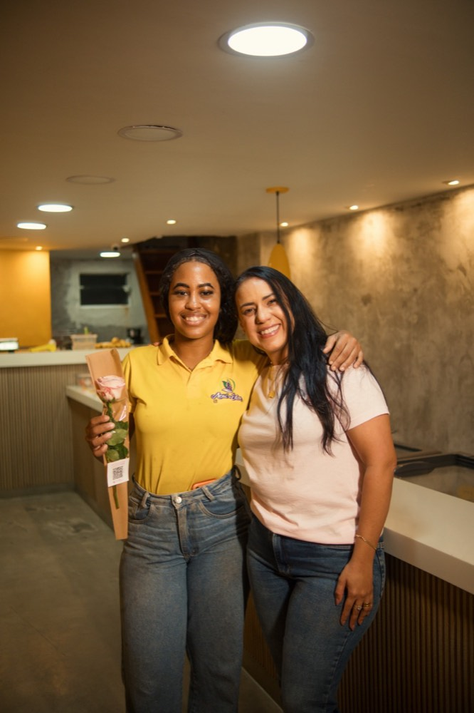
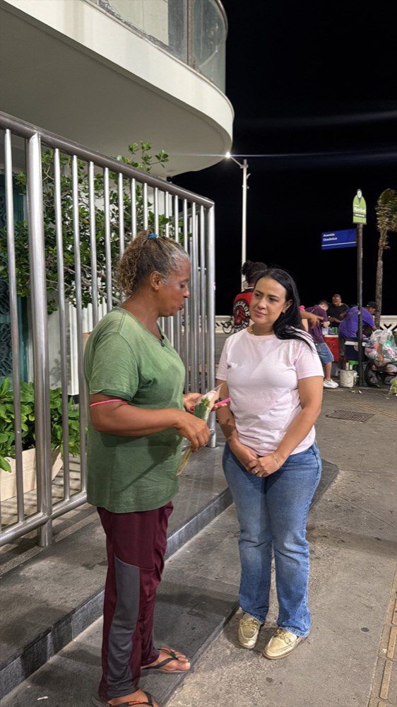
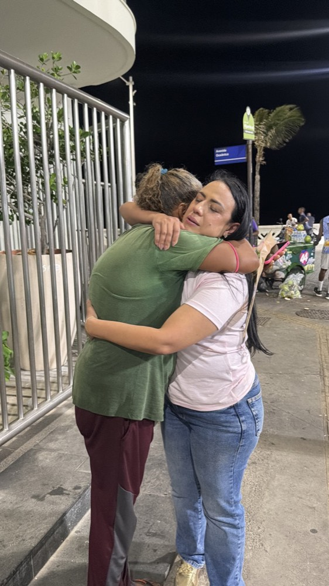
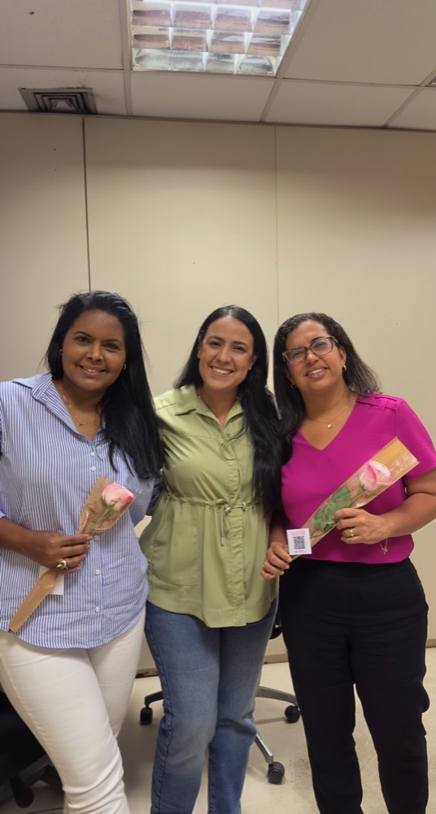
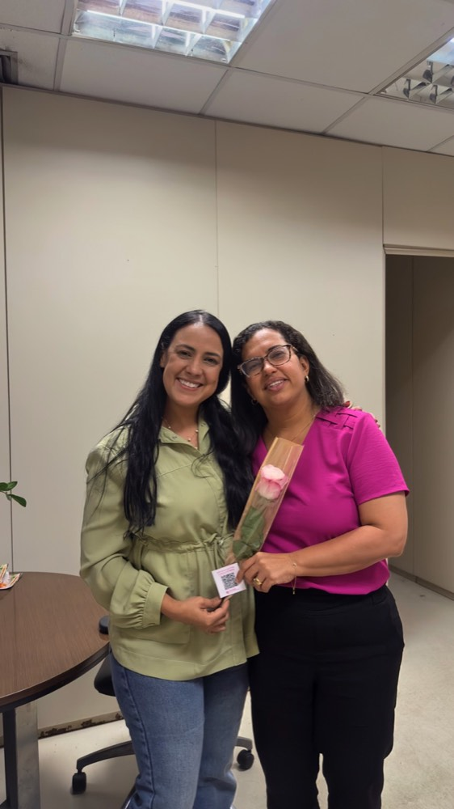

Um Florescer · Bahia
A mulher que ousa governar a si mesma, o seu entorno e os seus projetos. Um movimento por toda a Bahia.
Faça parte do movimento
Preencha os dados, leva menos de 1 minuto. Ao enviar, você fala com a nossa equipe pelo WhatsApp.
Uma rosa, um QR code, e uma história que começa.
A flor não é lembrancinha: é a desculpa para parar, olhar nos olhos e convidar. No balcão do comércio, no calçadão, na sala de reunião — onde a mulher já está.
-

-

-

-

-

Deslize para o lado para ver todas →
Entre na comunidade e comece a florescer.
Receba em primeira mão o curso Princípio de Débora, seja acolhida em uma célula e faça parte do time que vai mudar de vez a Bahia, governando a si mesma, o seu entorno e os seus projetos.
Aviso de Privacidade (LGPD)
O movimento Mulheres que Governam coleta os dados informados neste formulário (nome, WhatsApp, município, área/mensagem) com a finalidade exclusiva de convidar você para a comunidade e manter contato sobre o movimento.
Seus dados não são vendidos nem compartilhados com terceiros para fins de publicidade. Você pode solicitar a correção ou a exclusão dos seus dados a qualquer momento pelo mesmo canal de WhatsApp. Tratamos tudo com respeito e sigilo, conforme a Lei nº 13.709/2018 (LGPD).